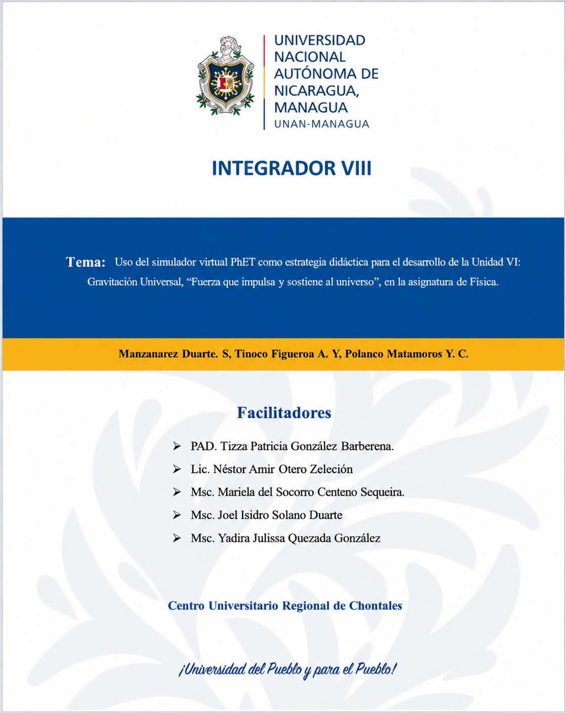

1
Vinculación del tema con las líneas de investigación, políticas y estrategias educativas
El tema “Uso del simulador virtual PhET como estrategia didáctica para el desarrollo de la Unidad VI: Gravitación Universal, en la asignatura de Física” se relaciona principalmente con la Línea CED-1: Educación para el Desarrollo, específicamente con la Sublíneas CED-1.4: Experiencias exitosas en contextos escolares, comunitarios e intersectoriales, porque propone una estrategia didáctica para fortalecer el aprendizaje de la Física mediante el uso de PhET. También presenta una relación complementaria con la Línea CNE-3: Aplicaciones de las ciencias exactas y la Sublíneas CNE-3.2: Física Aplicada, debido a que el simulador se utiliza para abordar contenidos relacionados con la Gravitación Universal y las Leyes de Kepler.
Al mismo tiempo, la propuesta se vincula con la Política y Agenda de Investigación e Innovación del Sistema Educativo Nacional, también con el Lineamiento 1: Institucionalización de la investigación e innovación, al integrar un recurso tecnológico en el proceso educativo y relacionarlo con el desarrollo curricular.
Por otra parte, el tema se relación con el Plan Nacional de Lucha Contra la Pobreza y para el Desarrollo Humano 2022-2026 principalmente con el Lineamiento III: Desarrollo de los Talentos Humanos para el Desarrollo Nacional desde el Sistema Nacional de Educación, especialmente con las acciones dirigidas al fortalecimiento de una educación de calidad y al buen uso de la tecnología educativa. El empleo de PhET permite incorporar recursos digitales al aprendizaje de la Física, favoreciendo el desarrollo de capacidades científicas y tecnológicas en los estudiantes.
Finalmente, la propuesta se relaciona con la Estrategia Nacional de Educación “Bendiciones y Victorias” 2024-2026, porque integra ciencia, tecnología, investigación e innovación en el proceso educativo. El uso de PhET permite desarrollar actividades en las que los estudiantes pueden observar, explorar y analizar fenómenos físicos, constituyendo una aplicación de la innovación pedagógica en la enseñanza de la Física
2

3
AREA DEL CONOCIMIENTO/ CUR-Chontales
Centro Universitario “Cornelio Silva Argullo”
2026 “Por una educación al servicio del pueblo “
Tema: Uso del simulador PhET como estrategia didáctica para el desarrollo de la Unidad VI: Gravitación Universal, “Fuerza que impulsa y sostiene al universo”, en la asignatura de Física.
Facilitadores
PhD. Tirza Patricia González Barberena.
Lic. Néstor Amir Otero Zeledón
Msc. Mariela del Socorro Centeno Sequeira.
Msc. Joel Isidro Solano Duarte
Msc. Yadira Julissa Quezada González
Autores
⮚ Silvio Manzanarez Duarte.
⮚ Angela Yoliveth Tinoco Figueroa.
⮚ Yumilda del Carmen Polanco Matamoros.
Fecha: 31/10/2026